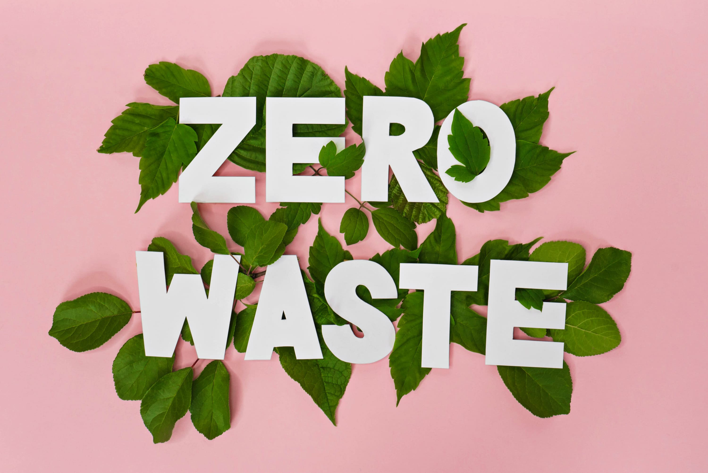
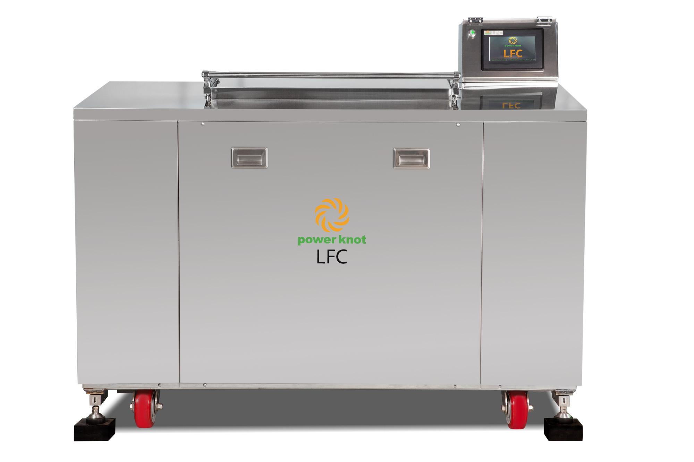

...
Our
Zero Waste
Policy

Our husband and wife team,
Trevor & Naomi have
proudly owned and operated
Second Slice Cake since 2015, serving the Northcote community with delicious foods & coffee made with only the finest, locally sourced ingredients.
Trevor & Naomi have
proudly owned and operated
Second Slice Cake since 2015, serving the Northcote community with delicious foods & coffee made with only the finest, locally sourced ingredients.
Through the use of a commercial Biodigester,
Second Slice Cake
ensures no food goes to waste by converting food waste into a reusable liquid that can be used for flora, fauna or even disposed off without contributing to the 8% of
greenhouse gases that food waste emits.

Through the use of a commercial Biodigester,
Second Slice Cake
ensures no food goes to waste by converting food waste into a reusable liquid that can be used for flora, fauna or even disposed off without contributing to the 8% of
greenhouse gases that food waste emits.
Any spare stocked and housemade ingredients are doanted to
OjHonest
for distrubtion to the needy.
Our Menu

Locally farmed
Eggs Benedict
served on in-house
baked sourdough
Eggs Benedict
served on in-house
baked sourdough
Organic spelt sconed
with berries
with berries
Organic spelt sconed
with berries
with berries
Fair Trade Certified
Arabica Coffe Beans
Arabica Coffe Beans
Contact Us
Address:
123 Fake Street,Northcore,
Melbourne VIC
3070